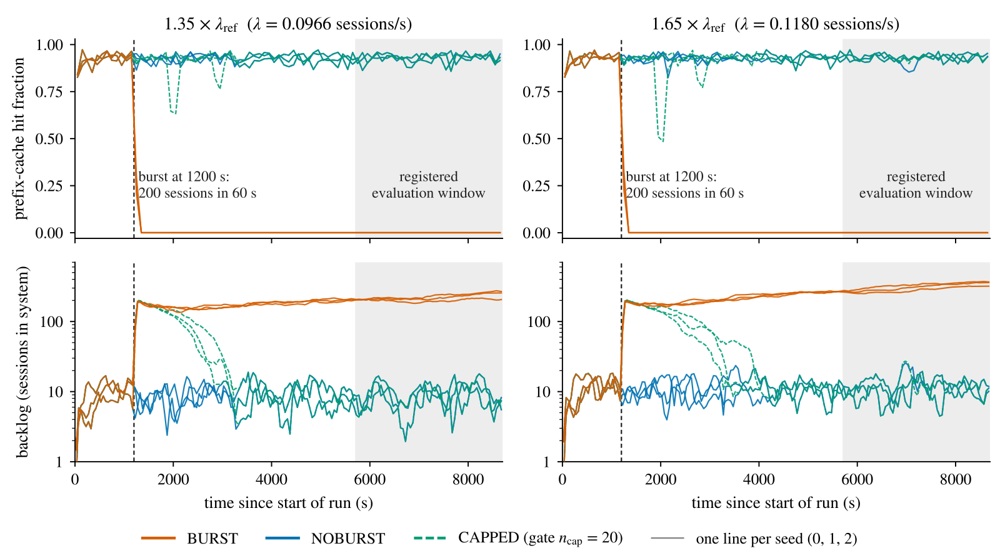
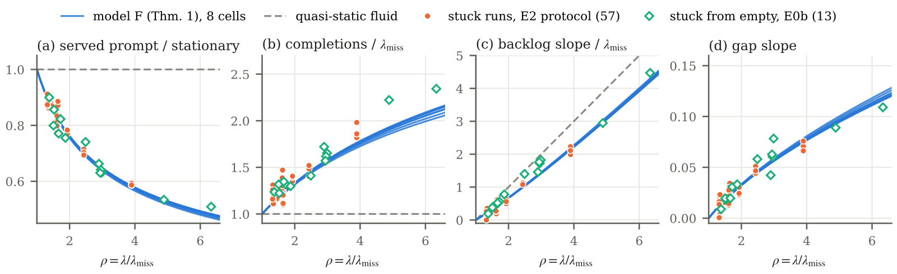
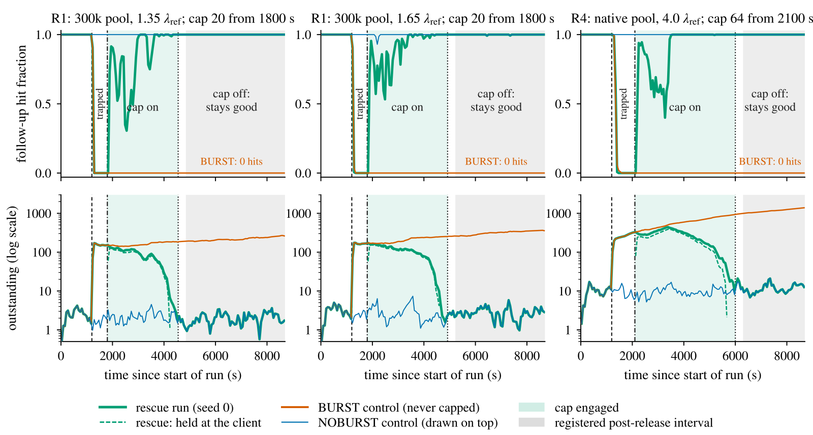
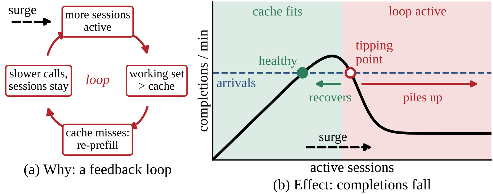
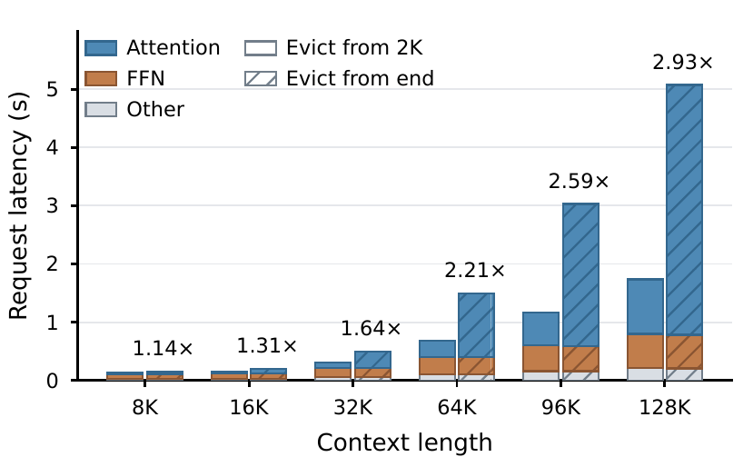

会调用工具的 LLM agent，每跑完一次工具，就把“上一轮的完整上下文 + 这次的工具输出”当作下一轮 prompt 发回推理引擎。上一轮的 KV cache 还在 prefix cache 里时（命中），下一轮只需 prefill 新增的部分：在这篇论文的负载里，命中的一轮只 prefill 551 个 token，没命中要 prefill 约 11,100 个。作者在 SGLang、单张 A100 上看到，一阵 200 个会话的突发流量涌入后，引擎掉进一种陷阱：每一轮都不命中，队列越排越长，而这个负载它在没有突发时一直扛得住。更反直觉的是怎么出来。在 1.65 倍 的到达率下（ 是关掉 prefix cache 实测的会话吞吐，后文所有速率都以它为单位），被困引擎在砍流量前的 10 分钟里，完成会话的速率仍有 1.21–1.70 倍 。照直觉，把到达率压到这个速率以下，积压就该回落。作者把到达率砍到 1.15 倍，三次运行的积压却两次上涨、一次微降，到实验结束仍是零命中。论文的解释是：被困时观测到的完成率偏高，主要因为被服务的多是新会话的前几轮，prompt 短、成本低，一些轮数少的会话就此结束。在作者的理想化模型里，真正能排空队列的门槛是“每轮都不命中”时的容量，约等于 1 倍 ，明显低于被困时看到的吞吐。另一个出口是限制同时在引擎里的会话数：9 次已经成形的陷阱，用这个办法全部救了回来，到达率不变，也没有拒掉任何会话。
引擎是怎么掉进陷阱的
先看陷阱怎么形成。agent 的会话在两轮之间要等工具返回（实验里平均 5 秒），这段时间它的 KV cache 闲置在显存池里。引擎要接纳排队的新请求，就得腾地方，闲置的 KV 会被 LRU 淘汰掉。负载正常时，会话很快回来，KV 还在，命中。突然涌进 200 个会话后，排队变长，会话两轮之间的间隔跟着变长，它回来时 KV 已经被别人的请求覆盖，只能整段重新 prefill。重新 prefill 更贵，队列更长，间隔更长，命中更少，形成一个自我加强的循环。论文的负载里，一个会话所有轮次都不命中时的 prefill 总量，约是“除第一轮外都命中”时的 16 倍。
为了能精确控制条件，实验负载是合成的：每个会话的轮数服从截断在 60 的几何分布，平均 14.76 轮；第 轮的 prompt 是 个 token，即上一轮 prompt 加 100 个生成 token 和 550 个工具输出 token；token 是随机 id，会话之间不共享前缀。KV 池限制在 30 万 token。作者在 SGLang 和 vLLM、A100 和 H200、Qwen2.5-7B 和 Llama-3.1-8B 上做了配对实验：同一组到达序列跑三种处理，一种在第 1200 秒注入 200 个会话（60 秒内到齐），一种不注入，一种注入但在客户端限制同时进入引擎的会话数。

五组配对实验共 30 次注入运行，每一次都从注入起到结束（7500 秒）保持零命中；同样的到达率下，30 次不注入的运行全程正常。这说明陷阱是突发本身造成的，不是负载超出了引擎能力。注入规模有门槛：每个随机种子下，注入 40 个会话都保持正常，60 个都陷进去。按 FCFS 调度时，陷阱一旦成形就不会自己好（以下是事后统计）：在约 100 个被困小时里，没有任何 300 秒窗口的命中率回到 0.5，最高只有 0.16。有 16 次运行里，引发陷阱的那批会话早就全部离开，其中 15 次之后完成的轮次仍一次都没命中，陷阱比触发它的流量活得更久。
把陷阱简化成一个排队模型
已有的分析把这种崩溃看成吞吐曲线的下坡段：系统里的会话数 按 变化， 是 个会话同时在跑时的完成率，会话一多命中率下降， 跟着下降。照字面读，被困时会话按曲线低端（约等于每轮都不命中时的容量）完成，积压按“到达率减这个容量”增长。作者的实测里，这两点都不对：被困运行完成会话的速率高于这个容量，积压增长也只有这个预测的约三分之二。
为了说清被困状态到底是什么，作者把它理想化成模型 F：一个单服务器的 FIFO 队列，每一轮都不命中，第 轮固定花 秒 GPU 时间（由一个只用服务器日志计时拟合的成本模型给出）；一轮做完立刻作为下一轮排回队尾；新会话以速率 到来。工具等待的 5 秒相对被困时 166–516 秒的轮间间隔可以忽略。
模型 F 是流体模型：到达和服务都被看成连续流动的工作量，单个请求小到可以忽略，速率乘时间就是精确的数量。这里有一个关键事实：一个请求在时刻 进队，要等队里已有的工作全部做完，所以它在 完成， 是时刻 队里所有待做的工作量。会话做完一轮马上排回队尾，于是同一个会话相邻两轮的间隔，恰好就是当时队里的待做工作量。
再往下一步，从任一时刻 出发： 进队的请求在 完成， 进队的请求在 完成，依此类推，相邻两个时刻之间叫一个周期。同一个会话的下一轮正好在 重新进队，但这串时刻只由先进先出决定，不依赖哪个会话还活着。因为先进先出，在 里进队的请求，正好就是在 里被做完的请求。所以一个周期要做的工作，就是上一个周期里进队的工作，等于前面各个周期新到的会话里、还活到第 轮的那部分的第 轮成本之和：
是第 个周期的长度； 是 个周期之前那段时间到达的新会话数； 是一个会话至少有 轮的概率； 是第 轮的成本； 是初始时刻就在队里的那批工作在第 个周期带来的部分，有限个周期后变成 0。直觉上，这和人口学里“今年出生数 = 各年龄段存活人口 × 生育率之和”的递推是同一种结构，作者也指出它属于这一类更新方程。 Hoot 说

左右滑动或点箭头看三步。数字都是示意（每秒到 1 个新会话，第 1 轮 0.6 秒，一半会话有第 2 轮、成本 1 秒，前两个周期各 10 秒），论文没有这个例子；先进先出的周期划分和递推式取自正文。 出处: 论文模型 F 与沿先进先出周期的递推 Δn = Σk λ c_k G_k Δn−k + h_n；本例参数为示意，结果按该式手算
这个递推是线性的，长期行为由一个数决定：方程 的正根 。当到达率超过每轮都不命中时的容量 （分母是一个会话所有轮次都不命中时的平均总成本；在作者的各组配置里， 是 0.96–1.035 倍 ），有 ，作者证明从任何被困状态出发，系统都收敛到同一种自相似的状态：
- 轮间间隔随时间线性增长，；
- 积压的会话数按 的速率增长， 是会话轮数；
- 会话完成率是 ；
- 被服务的轮次构成向前几轮倾斜，第 轮的占比正比于 。
可以这样理解：每个周期都比上一个长约 倍。一个有 轮的会话要熬过 个越来越长的周期，作者证明它的完成时刻约是到达时刻的 倍（时间从一个虚拟起点算）。于是一段时间里到达的这类会话，要摊到 倍长的时间里完成，完成速率被稀释成到达速率的 ；按轮数分布加权平均，就是 。轮数越多，被稀释得越厉害。

为什么陷阱不会自己愈合？引擎被困时以“全不命中”的速度往 KV 池写新内容，累计写入量每 26–78 秒就相当于一整个池子；而前三组配对实验的注入运行里，轮间间隔是这个时间的 4.1–9.7 倍。会话回来时它的 KV 早已被覆盖，“每轮都不命中”这个假设自己维持住了，而且间隔越拉越长，维持得越稳。作者说明这是一个一致性论证，不是定理的一部分。
被困的引擎为什么反而完成得更快
按直觉，被困引擎每秒完成的会话数不该超过每轮都不命中时的容量。作者把完成率拆成两个因子：
只取决于轮数 的分布。轮数是几何分布时，每一轮结束的概率都一样， 恰好等于 1；截断（比如最多 60 轮）会让它略低于 1。 是成本增长因子：稳态轮次构成（每个会话的每一轮都算一次，也就是 依据的构成）下的平均单轮成本，除以被困时倾斜构成下的平均单轮成本。后面的轮次 prompt 更长、更贵，被困时被服务的又多是前几轮，所以 。作者把这个效应叫 youth premium：服务器把时间花在新会话便宜的前几轮上，一些轮数少的会话就此结束，长会话则被越推越远，于是完成率高于容量，积压却仍在发散。
这个效应不是必然的。轮数近乎固定时， 可以远低于 1，压过 ，完成率反而低于容量。作者用这一点做了一个事先冻结预测的检验（MIRROR）：把会话改成约 98% 恰好跑 20 轮（模拟有固定步数预算的 agent）。模型预测，在 1.65 倍 下，注入后约 40 分钟里完成几乎停止，因为注入的那批会话要排完 20 个越来越长的周期才能结束；然后它们集中完成一波，之后有一段完成率只有容量一半左右的低谷。实测两种到达率下三个种子都按这个形状走。以 1.65 倍为例：先是 0.06–0.09 倍 ，一波集中完成出现在 4945–5089 秒，之后在 6600–8700 秒里是 0.50–0.61 倍，低于实测容量 1.06 倍。这段测的是集中完成之后的低谷，模型给的长期完成率是 0.81 倍；这个负载也是作者对照模型预测挑出来的。它否定的是“按吞吐曲线读”的那几种说法，后者预测完成率稳定在 1.05 倍左右、没有集中完成的一波。
理论和真机对得上吗
作者在 57 次被困运行上对照模型 F（SGLang 和 vLLM，两种 GPU，两种模型），没有用任何被困时的测量拟合参数；vLLM、H200 和 Llama 各只拟合了一个速度因子，用的是它们自己全不命中时的 token 速率。需要说明，理论是在读过这些运行之后推导出来的，所以这一部分是回顾性检验。表里的“稳态”指上面说的稳态轮次构成。
| 检验量 | 模型 F 预测 | 57 次被困运行实测 | 吞吐曲线读法 |
|---|---|---|---|
| 被服务轮次的平均 prompt | 比稳态短 10–42% | 短 9–41%；50 次误差在 3% 以内 | 与稳态相同 |
| 会话完成率 | 高于全不命中容量 | 每次都高于 ，为 1.10–2.03 倍 | 等于容量 |
| 积压增速 ÷ 模型 F 的 | 1 | 均值 0.99，中位数 1.06 | 1.36–1.59 |
| 轮间间隔增长斜率，实测 ÷ 预测 | 1 | 中位数 1.01，单次 0.04–1.81 | 无 |
这些数字说明，模型 F 对“被困时在服务什么”和“积压涨多快”的描述，比吞吐曲线读法准得多。完成率高出一部分来自拥塞时引擎算 prompt token 本身更快；作者用每次运行实测的 token 速率比去除这部分，完成率仍是 的 1.08–1.81 倍，57 次无一例外。单次运行的离散较大，主要随该次到达序列的实际到达数变化。
还有几组检验的预测在实验开跑之前就冻结了。不注入流量、只把工具调用在 1200–3000 秒内每次拖慢 30 秒，三次运行全部被困，而早先用同样到达序列跑过的不拖慢运行都正常；另一组拖慢 15 秒的实验三次里被困一次。把这四次只因工具变慢而被困的运行合起来，与事先冻结的模型预测比较，服务构成、间隔斜率、完成率、积压斜率四项都落在事先定好的容差内（例如服务构成 ±5%、积压斜率 ±35%）；另一项按每次运行的实际到达量预估积压斜率的检查，有两次没过。这些检验的容差是在早期运行上定的，所以只在“结果未知”这个意义上是盲测。
两个出口：拒绝流量，还是限制会话数
运维人员看到被困引擎还在以某个速率完成会话，很自然会把到达率压到这个速率以下。模型 F 说这不够：只要完成率 高于 （作者的标准负载在所有检查过的到达率下都是如此，MIRROR 那种固定轮数的负载除外），把到达率砍到 和 之间，队列永远排不空；砍到 以下才能排空，而且越接近 排得越慢。用模型数字说：1.65 倍 下 ，砍到 ，积压只回落 0.3% 又重新上涨；砍到 ，要约 15 小时才排空。
真机上的检验（CUT）在 1.65 倍 注入后、第 2400 秒砍到达率，模型 F 对每个种子的预测事先冻结。砍到 1.15 倍（实际 1.12–1.20 倍），低于同种子不砍时的被困吞吐 1.32–1.41 倍。如果引擎能按那个吞吐持续完成，积压斜率应是 −0.0094 到 −0.0204 个/秒；实测是 +0.0040、−0.0022、+0.0029，模型 F 预测 +0.0039、−0.0026、+0.0028，三次都到结束仍零命中。砍到 0.85 倍（实际 0.81–0.88 倍）：积压在缓慢下降，到 8700 秒三次都还被困，剩 140、77、89 个会话，模型预测 139、79、94。作者也说明了检验的边界：“没出来”指 8700 秒内；判定规则是看过预测之后才定的；在 1.15 倍那组里，“按砍后的到达率恒定完成”这类中间读法拟合得和模型 F 一样好，能把模型 F 区分出来的证据是事后分析；砍流量发生在注入后 1200 秒，测的是刚成形的陷阱，不是长期状态。

第一个出口是停收流量。在 1.35 倍下从第 1800 秒停止接收：停 600 秒拒掉 56–59 个会话，仍然被困；停 3600 秒拒掉 355–378 个会话，才恢复正常。这说明靠饿死陷阱来恢复，代价是成百个会话被拒。
第二个出口是让轮次重新命中，即离开模型 F 的前提。做法是一个 FIFO 闸门：同时最多放 个会话进引擎，每个会话占着名额直到最后一轮结束，多出来的在客户端等。在陷阱里中途启用时，已在引擎里的会话超过上限，闸门靠自然减员收紧：会话的一次工具调用结束时，如果在册会话仍多于上限，它就交出名额，进入一个恢复队列；恢复队列排在新到会话前面，都按先来后到放行。上限取吞吐曲线上完成率达到峰值 95% 的最小会话数（30 万池上是 20）。这样进入引擎的会话少到 KV 放得下，轮次重新命中；排队从“引擎里每轮都不命中”换成“客户端里等名额”。事先登记的救援实验在注入后 600–900 秒（30 万池在第 1800 秒，原生池在第 2100 秒）、已经成形的陷阱里加上这个上限（加之前 300 秒命中率 0.000–0.002），9 次运行全部救回，到达率不变，没有拒掉一个会话：命中率三分钟内回升，积压排空；客户端队列空了 300 秒后撤掉上限，之后一直正常，和不注入的对照没有区别。代价是客户端等待：每个被暂停的会话平均等 386–569 秒；goodput 按每小时达标完成的会话数算，会话耗时不超过空载参考耗时的 4 倍才算达标（事后计算，略去了原定义里的逐 token 延迟条件）；和同种子不注入的运行相比，注入后一小时内到达的会话 goodput 仍损失 45–97%。
我认为它的局限
第一，模型 F 只描述陷阱内部，不描述进出陷阱的过程。真机上 30 万池同时跑约 28 个请求，vLLM 还会抢占，积压回落时命中会回来，作者没有证明引擎收敛到模型 F。57 次运行的对照是回顾性的，评分容差也是在这些运行上定的；盲测只有工具变慢的 4 次、CUT 的 6 次和 MIRROR，全部在 A100、30 万池上。
第二，负载离真实 agent 有距离：随机 token、会话间不共享前缀、工具时间服从均值 5 秒的指数分布，客户端从不重试或放弃，模型都是单卡 7–8B 的稠密模型。作者引用的真实 agent 轨迹里工具时间更短、更分散；prefill 和 decode 分开部署、KV offload 和更大的模型都没测。同期 Lu 等人在 prefill 和 decode 分开部署的 SGLang 上观察到同一种崩溃，但那里被困时命中率约 0.3，不是零，模型 F 的结论不能直接套用。
第三，救援实验里上限是在固定时刻加上的，不是由在线信号触发。在 vLLM 那组配对实验里，作者事先冻结了一个基于命中率阈值的检测器，它在两次限会话运行里无陷阱也报了警；什么时候该加上限，论文还没有给出验证过的规则。另外，SGLang 的最长前缀匹配调度（LPM）在等待请求不超过 128 个时不按 FCFS 排队，9 次被困里有 4 次自己出来了，结论主要针对 FCFS 调度。
对推理服务团队意味着什么
如果你在服务多轮、会调用工具的 agent，这篇论文给了三条可以直接用的提醒。
- 把“关掉 prefix cache 时的会话吞吐”当作一个要测的容量指标。按模型 F，被困后的恢复门槛是它，不是仪表盘上被困时看到的完成率；限流时按后者设阈值，很可能出不来。即使压到它以下，排空也要以小时计，所以实际出口是限会话数。
- 限制同时进入引擎的会话数，是不拒绝会话的出口。上限可以按论文的办法从吞吐曲线上取（完成率达到峰值 95% 的最小会话数），先在压测里复现“注入突发 → 零命中 → 加上限 → 恢复”这条链。
- 判断是否被困，不要看会话完成率。论文的判定用的是未命中 prefill 的 token 速率是否接近关缓存时的速率；我建议把它和后续轮次命中率、会话轮间间隔一起监控。
| 维度 | 评价 |
|---|---|
| 问题重要性 | 高。agent 负载下突发流量就能把 prefix cache 的收益整个打掉，且不会自愈 |
| 方法创新性 | 中高。自相似状态和更新方程是已知数学，新在沿 FIFO 轨道推出递推、证明任意被困状态都收敛过去，并拆出完成率的两个因子 |
| 实验证据 | 中高。登记过的配对实验覆盖两种引擎、两种 GPU、两种模型；理论对照多为回顾性，盲测只在单一配置 |
| 工程成本 | 低。会话上限是客户端或网关层的准入控制，不改引擎 |
| 是否值得尝试 | 值得。先在压测里测出关缓存的会话吞吐和会话上限，再决定限流阈值 |
被困引擎看起来还在高速完成会话，主要因为被服务的轮次偏向新会话的前几轮，这个数字不能用来定恢复的门槛。
读完这篇，你觉得
夜读鸮记下了，谢谢你的反馈。
点一下即可，无需登录；再点一次撤回。只统计匿名次数，不记录你是谁。
相关论文RELATED

Infra · 2026-11-04When Cache Pressure Becomes a Trap: Metastability in Agent Serving一阵十分钟的流量高峰，就能让 prefill 和 decode 分离部署的 agent 推理服务一直恢复不了。高峰过去、流量回到原来的水平以后，在 SGLang 上之后一小时的有效吞吐仍下降约 88%，而且故障前利用率和队列长度几乎看不出征兆。背后是一个循环。缓存不够导致重算，调用变慢，会话结束得更晚，在线的上下文更多，缓存就更不够。作者据此做了 Basin，按预估的每个会话最长上下文从一个总额度里预留，额度不够就让新会话先排队。在真实 GPU 上，一个不带预测器的简化原型，有效吞吐已是此前最强方案 Continuum 的 1.20 到 1.70 倍。 Infra · 2026-11-03HiState: Hierarchical Prefix Cache Management for Hybrid LLM Serving in Agentic Workloads混合模型的循环层会把整段前缀压成一个固定大小的快照，没法截短回更早的位置。所以 KV 明明还在，只要匹配位置的快照没存过或已被淘汰，就要从更早的快照甚至从头重算一大段。HiState 抓住一个不对称：一次缓存命中要读所有匹配的 KV，却只读一个快照，而且快照大小和上下文长度无关。所以它把大量历史快照放到 SSD，把内存留给 KV，并把快照和 KV 放进同一个淘汰队列。队列里每一项的分数是最近访问时间，加上删掉它后要多重算的 token 数除以它能腾出的空间，分数最低的先删。在两份公开的编程 agent 请求记录上，p99 TTFT 相对基于 vLLM 的 Marconi 最多加速 5.73 倍。快照多存不占快内存，每次命中也只从慢存储读一个。
Infra · 2026-11-03HiState: Hierarchical Prefix Cache Management for Hybrid LLM Serving in Agentic Workloads混合模型的循环层会把整段前缀压成一个固定大小的快照，没法截短回更早的位置。所以 KV 明明还在，只要匹配位置的快照没存过或已被淘汰，就要从更早的快照甚至从头重算一大段。HiState 抓住一个不对称：一次缓存命中要读所有匹配的 KV，却只读一个快照，而且快照大小和上下文长度无关。所以它把大量历史快照放到 SSD，把内存留给 KV，并把快照和 KV 放进同一个淘汰队列。队列里每一项的分数是最近访问时间，加上删掉它后要多重算的 token 数除以它能腾出的空间，分数最低的先删。在两份公开的编程 agent 请求记录上，p99 TTFT 相对基于 vLLM 的 Marconi 最多加速 5.73 倍。快照多存不占快内存，每次命中也只从慢存储读一个。
Infra · 2026-11-04Rethinking KV Cache Eviction for Agentic LLM ServingKV cache 放不下时，vLLM 和 SGLang 都从缓存序列的末尾开始删，为的是保住开头那段能被很多请求共用的前缀。但 agent 每一轮都会把很长的历史重新发回来，而越靠后的 token 重算越贵，因为它要和前面所有 token 算注意力。Penelope 反过来做：共享前缀照样保留，剩下的历史从靠前的部分开始删，留住靠后的部分。请求回来时，只重算缺掉的那一段。在 SGLang 上用真实 agent 请求记录测，只用 GPU 缓存时平均首 token 延迟最多降 60%，再加上 CPU 内存做第二层缓存时最多降 76%。该删哪一段，要看重算它要花多少，而不只看它被多少请求共用。
讨论
欢迎补充实验细节、复现经验或不同看法。需 GitHub 登录。
正在加载讨论…